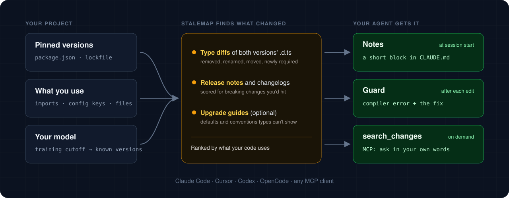
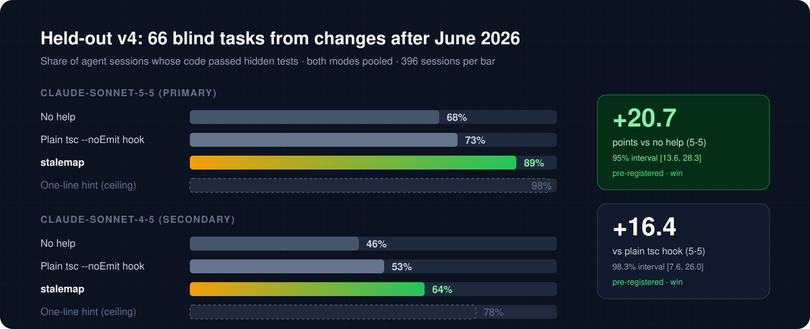

stalemap finds the dependencies that changed after your model's training cutoff and tells the agent what changed: before it starts, after every edit, and whenever it asks.
Using an AI agent? Ask it to "install stalemap from stalemap.com". Instructions for agents: stalemap.com/install.md
// ai 7 · AI SDK - streamText({ maxSteps: 5 }) + streamText({ stopWhen: isStepCount(5) }) // zod 4 - z.string({ required_error: "…" }) + z.string({ error: "…" }) // next 16 - middleware.ts → middleware() + proxy.ts → proxy() // mongoose 9 - pre("save", function (next) {…}) + pre("save", async function () {…})
stalemap compares each dependency's version the model knew with the one you've installed: type declarations, release notes and upgrade guides. It then puts what changed in front of the agent, ranked by what your code actually uses.

A short, ranked block in CLAUDE.md or AGENTS.md: removed and renamed APIs, new required options, changed defaults, each with its replacement.
Runs your project's own tsc. Errors a changed dependency explains come with the fix, from the notes or the matching release-note or upgrade-guide section. Moved config keys and renamed files are flagged even when they still compile.
An MCP tool the agent asks in its own words, such as "resolve alias in next.config", to get the matching changes with their sources and code.
66 tasks drawn by seed from every breaking, deprecation and behavior change that 33 popular npm packages shipped between July and October 2026, after the training cutoff of the models tested. The tasks were written by an author who never saw stalemap. The build was frozen and the analysis pre-registered before any result existed. Hidden tests decide pass or fail.
tsc hook after each edit
| Pre-registered comparison | Model | Difference | Interval | Verdict |
|---|---|---|---|---|
| stalemap vs no help (primary) | claude-sonnet-5-5 | +20.7 pts | [13.6, 28.3] | win |
stalemap vs plain tsc hook | claude-sonnet-5-5 | +16.4 pts | [7.6, 26.0] | win |
| stalemap vs no help | claude-sonnet-4-5 | +17.9 pts | [7.6, 28.8] | win |
stalemap vs plain tsc hook | claude-sonnet-4-5 | +10.6 pts | [0.3, 21.7] | win |
Two-level bootstrap over tasks and runs; secondary comparisons at 98.3% (Bonferroni over three). Median cost per session with stalemap was $0.050 vs $0.041 with no help on claude-sonnet-5-5. Everything is in the repository: protocol, tasks and hidden tests, blind review, full results.
JavaScript and TypeScript projects. stalemap reads your package.json, lockfile and imports locally; your source code never leaves your machine.
Paste this into Claude Code, Cursor, Codex or OpenCode. The agent detects itself and its model, runs stalemap setup, verifies it, and tells you what it changed.
Adds the notes at session start, the guard after each edit, and the search_changes MCP tool.
Writes the notes, registers the MCP server and installs the guard as the agent's post-edit hook, as project files you can commit. --dry-run shows the plan.
The one your agent uses: detected from Claude Code, Codex, OpenCode or Gemini CLI settings, or passed with --model. Cutoffs come from models.dev.
Package names and versions go to the npm registry and GitHub to fetch type declarations and release notes. Your code is scanned locally and never uploaded.
Yes, for anything released after their cutoff. In v4, claude-sonnet-5-5 failed a third of the tasks on its own; with stalemap it passed 89%.
It catches what fails to compile, not what to write instead, and not changed defaults. In v4 a plain tsc hook got 73%; stalemap's guard runs the same check and adds the fix.
stalemap is free and MIT-licensed. With stalemap, agent sessions cost about 20% more on claude-sonnet-5-5 (median $0.050 vs $0.041 per task).
Other languages, monorepo workspaces, and behavior changes that no release note or guide describes. The limits are listed in the README.